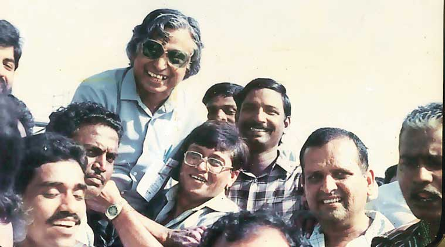

Dr. APJ Abdul Kalam

Abdul Kalam’s teammates lifting him on their shoulders
on the first successful launch of Agni. His pet project.
- 1931 Born in Rameshwaram, Tamil Nadu Avul Pakir Jainulabdeen Abdul Kalam was born to Jainulabdeen, a boat owner, and homemaker Ashiamma. He went to Ramanathapuram Schwartz Matriculation School and worked from an early age to supplement the family income.
- 1960 Joins DRDO as scientist Kalam completes his degree in Aeronautical Engineering from Madras Institute of Technology (MIT) and joins the Defense Research and Development Organization (DRDO) as scientist.
- 1969 Moves to ISRO Kalam moves to the Indian Space Research Organisation (ISRO) where he helms India's first Satellite Launch Vehicle (SLV-III)
- 1980 Lead's India's entry in the Space club Kalam leads India’s efforts to enter the space club by putting the Rohini satellite in Earth's orbit with the first indigenous SLV-III
- 1980 — 1990 Develops Prithvi and Agni missiles As the chief of the Integrated Guided Missile Development Programme, he is credited with the development and operationalisation of Agni and Prithvi missiles.
- 981 Recieves the Padma Bhushan Kalam recieves the Padma Bhushan for his contribution to the field of science and technology
- 1990 Honoured with Padma Vibhushan Kalam is awarded the Padma Vibhushan, India’s second highest civilian honour
- 1992 — 1999 Appointed India’s Chief Scientific Adviser Kalam is appointed as the Chief Scientific Adviser to the Prime Minister and the Secretary of the DRDO
- 1997 Honoured with the Bharat Ratna Kalam is awarded the Bharat Ratna, India's highest civilian honour for his contribution to the scientific research and modernisation of defence technology in India.
- 1998 Spearheads the Pokhran mission India conducts the Pokhran II nuclear tests with Kalam being one of the forces behind its success
- 1999 — 2001 Serves as India’s Chief Scientific Adviser Serves as Principal Scientific Advisor to the Government of India
- 2002 — 2007 Elected as India's 11th President Kalam is elected the 11th President of India succeeding KR Narayanan. He won the 2002 presidential election with an electoral vote of 922,884. During his five years in office, he was fondly called ‘The People’s President'
- 2012 Launches 'What Can I Give Movement Kalam launches the ‘What Can I Give Movement’, a programme for the Indian youth aimed at defeating corruption
- July 27, 2015 Passes away in Shillong, Meghalaya Kalam passes away aged 83, after collapsing because of a cardiac arrest while delivering a lecture at IIM Shillong